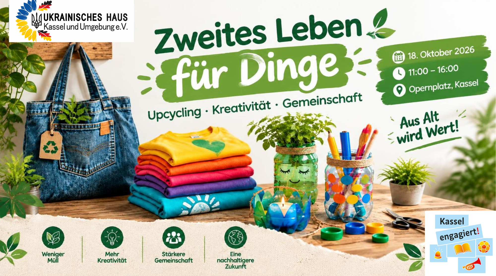

Anstehende Veranstaltung
Zweites Leben für Dinge – nachhaltig, kreativ und gemeinsam
📅 Datum: Sonntag, 18. Oktober 2026
⏰ Uhrzeit: 11:00 – 16:00 Uhr
📍 Ort: Opernplatz, Kassel
🎟️ Eintritt: Kostenlos
Wie können alte Dinge wieder nützlich werden? Das zeigt das Ukrainische Haus Kassel und Umgebung e.V. am 18. Oktober auf dem Opernplatz.
Aus alten T-Shirts, Jeans, Plastikflaschen und Eierkartons lassen sich kreative und nützliche Dinge herstellen. Wir möchten zeigen, wie einfach Wiederverwendung sein kann, und dazu anregen, weniger wegzuwerfen.
Gemeinsam werden wir kreativ, tauschen Ideen aus und setzen uns für mehr Nachhaltigkeit in Kassel ein.
Wir freuen uns auf Ihren Besuch!
Die Veranstaltung findet im Rahmen des Programms „Kassel engagiert! – Förderung bürgerschaftlichen Engagements“ statt.
Veranstalter: Ukrainisches Haus Kassel und Umgebung e.V.
Veranstalter: Ukrainisches Haus Kassel und Umgebung e.V.